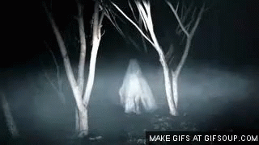

La lloronaCuenta la leyenda que una mujer se dirige a los pueblos y al encontrar el sendero que lleva directo a los cementerios, empieza a sollozar por haber perdido a sus hijos. En cada calle que deambula solamente llora y ninguna persona puede estar cerca, quienes la han visto aconsejan no darle la espalda al observarla, porque a la llorona le gusta colocarse de un costado y si la ven del susto pueden perder la vida.Al encontrar una iglesia en cada pueblo trata de entrar para limpiar su alma, pero no puede lograrlo porque inmediatamente desaparece. La condena eterna de la llorona es el sufrimiento por los errores cometidos. Si alguien trata de seguirla o mirarla, después tendrá por siempre la presencia de este triste espectro.En mitad de la noche, cuando apenas se escuchan los bruscos ruidos al avivar la lenta marcha de animales por los boyeros, por los lados del río acercándose y alejándose por lapsos de tiempo, una voz adolorida atrae la atención de viajeros.Es el llanto de una mujer que divaga por las orillas de los ríos, buscando algo que jamás encontrará. Aterroriza a los niños que escuchan la historia por boca de las abuelas, sobre esa triste mujer que se encuentra en los potreros, impidiendo con su gemido eterno el silencio de la noche.La llorona de El Salvador era una humilde campesina que atraída por la tranquilidad de la naturaleza y los pequeños pájaros en las ramas de higuerones, se trasladaba al río para conseguir agua en sus tinajas de barro, alertando a las vacas en el camino. Al visitar la hacienda familiar quedó maravillada por el lujo, incluso llegó a compararse con las señoritas que venían de San José y empezó a imitarlas.Comenzó a ser el servicio y llevada a la capital, en un corto tiempo se dejó llevar por el libertinaje de la época. La hermosa campesina se dejó seducir por un joven, al sentir que iba ser madre regresó a la casa paterna, tuvo una niña a escondidas de sus padres y la arrojó enseguida al río por el temor de enfrentar a su padre. Enloqueció por la culpa y la pena, por eso continúa vagando a la orilla de los ríos, siempre buscando a su preciosa hija. |  |